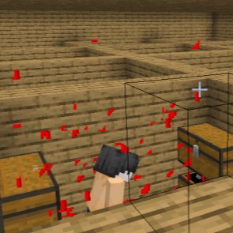
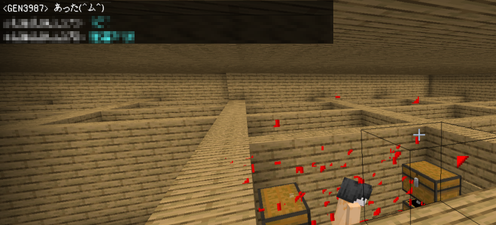
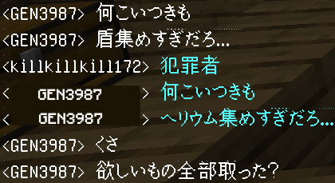
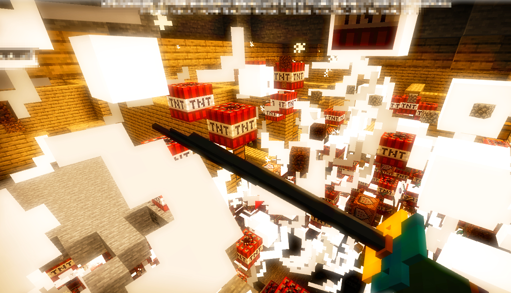

2020-09-20
Activities
GenServerの変について
著者:Rinrin0413
本日午後六時ごろにMinecraft Bedrock Editionのver1.16.100.56のGenServerにて、
GEN氏が中心となってサーバーの動作確認テストが行われました。
旧夏祭り会場にて追加アイテムの存在を確認したが、スキル発動が出来るのか
確認する為にロビーのゴミ箱を漁るも見つからづ、GEN氏は倉庫に向かっていきました。
そこで鯖主の独裁力により倉庫の極めて頑丈な装甲を難無く突破、個人部屋に侵入しました。
その際、GEN氏は満足したかのような傲慢な口調で「あった(＾ム＾)」と発言していました。

更にそれだけでなく「何こいつきも」などと吐き捨てて、「欲しいもの全部取ったらここ押して」と発言し、
何かもっと恐ろしい悪事を企んでいるようにも見えました。

その予感はみごと的中。そこにあったレバーを引くと倉庫の床下中に敷き詰められた
トリニトロトルエン(TNT火薬)が露わになり点火され倉庫を吹き飛ばしました。
その影響で倉庫の五分の四が消滅,サーバーが落ちました。

なお、この窃盗及び損壊は生態系を守るために必要な自然現象であり、
人々の言う災害の一つです。
しかしご安心ください。GEN氏によるとサーバーのバックアップを80回とったと発言していることから
次回のサーバー開放時にはいつもの状態に戻ると考えられます。
今後ともGenSerevrRPGを宜しくお願い致します。